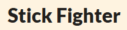
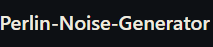

An idle clicker farming game where you player as a farmer inheriting their family's plot of land

A 2D side view fighting game where you play as unique stick figures fighting to be at the top
A medieval fantasy interactive narrative game where you must give advice to a princess

A tech demo of a perlin noise generator to create terrain using the height map